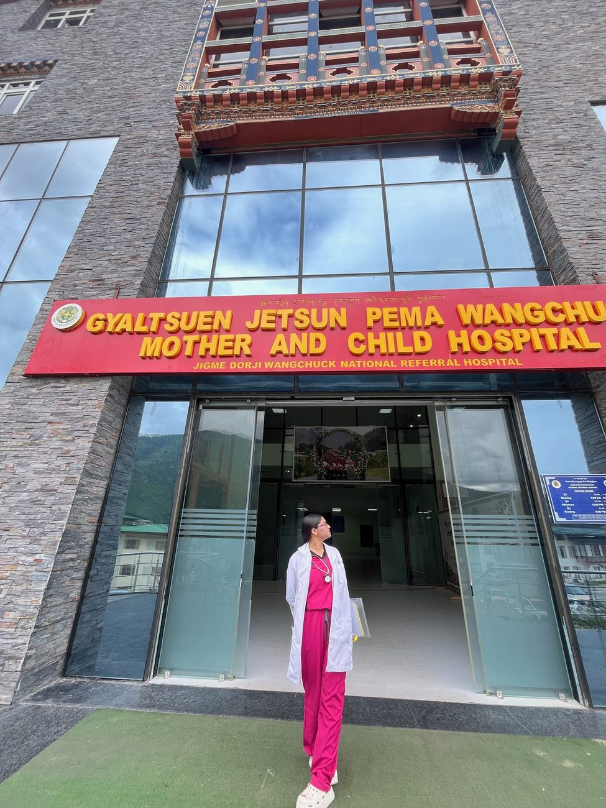

Dr. Pulse Bhutan
Research, care and advocacy for Bhutan and beyond.
DoctorEarly-career researcherScience communicatorMentor
Dr. Manisha Kafley is a Bhutanese doctor and early-career researcher. Fresh from her MBBS, she is a medical intern at the national referral hospital in Thimphu and keeps researching alongside her training. Dr. Pulse Bhutan brings together her field research, her work in communities, and the notes, mentoring and guidance she shares with young scientists and future doctors across Bhutan.

Vital signs
Meet the doctor
Journey
From Gelephu to the national referral hospital
Each step was earned: a school scholarship, a national scholarship, first positions in medical school and an honours degree.
Acknowledgements
Research
Science that starts in the community
Research has run alongside Dr. Manisha's medical training from the start, and continues during her internship. As a student she went where the questions are: rural schools, villages and homes. These two field studies shaped her focus on prevention, early detection, and the health of women and children.
Research interests
Why Bhutan
A small country with big scientific potential
Bhutan is small enough to reach almost every citizen, and bold enough to try new ideas first. For health research, that is a rare advantage.
Gelephu Mindfulness City
Questions she wants to answer
References
Care · Advocacy · Mentoring
Gross National Health
Bhutan measures its progress in happiness, and good health is where that starts. Beyond her research, Dr. Manisha's work spans the hospital where care happens, the communities where people first hear about prevention, and the students who will carry science forward.
Talks and presentations
Honours and recognition
In the field
Where the work happens
Field research in rural Mymensingh, outreach with women and schoolgirls, student leadership with IFMSA Bangladesh, and clinical training at Bhutan's national referral hospital.
Handwritten notes
One page. One topic. Everything that matters.
Core physiology and medicine, written the way Dr. Manisha studies: one clear diagram, the numbers worth remembering, a memory trick and a clinical pearl. Each page ends with a three-question self-test.
These notes are for learning and revision, not for treating patients. Always check them against your textbooks and teachers.
For students
So you want to be a doctor?
The path in Bhutan, step by step, with links to the official sources. Rules change, so always check with each office before you apply.
Dr. Manisha's advice
Useful links
Learn · Invite · Collaborate
Work with Dr. Manisha
Students, teachers, schools and organisations are welcome to get in touch. Choose what you need and write a short message. It opens in your own email app, ready to send.
Mentoring and tutoring
Help with Class XI–XII Biology and Chemistry, early MBBS subjects such as physiology, and advice on scholarships and medical school. Dr. Manisha has tutored junior Bhutanese and international students as a volunteer since her medical school years.
School and community talks
Breast cancer awareness, healthy habits and careers in medicine, for schools, clubs and community groups.
Research and collaboration
Cancer prevention, women's health and medical education projects in Bhutan and beyond.